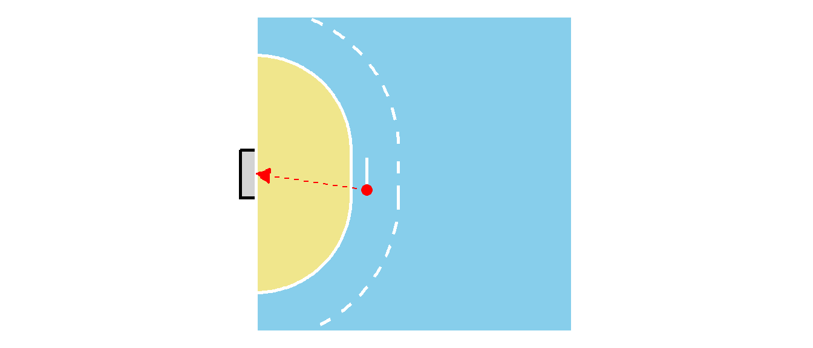
24 Logistische Regression
In der bisherigen Behandlung der Regression war die Kriteriumsvariable, also die abhängige Variable, immer eine metrische Variable deren Wertebereich im Prinzip \(-\infty\) bis \(\infty\) umfasste. In der Realität ist dies natürlich nicht tatsächlich der Fall, da beispielsweise die Wurfgeschwindigkeit im Handball in der Realität durch die physiologische Kapazität der Spieler:Innen beschränkt ist. Allerdings gibt es auch den Fall, dass die Kriteriumsvariable von vorneherein überhaupt nur Werte innerhalb eines bestimmten Intervalls zulässt. Beispielsweise kann die Wahrscheinlichkeit ein Tor im Handball zu werfen nur Werte im Intervall \([0,1]\) einnehmen. Soll nun zum Beispiel ein statistisches Modell erstellt werden um die Torwahrscheinlichkeit \(p_{\text{Tor}}\) in Abhängigkeit vom Abstands \(d\) zum Tor und des Winkels \(\alpha\) gegenüber der Torauslinie vorherzusagen (siehe Abbildung 24.1) dann ist nicht sofort klar wie dies durchgeführt werden soll.
Im Prinzip könnte ein Ansatz mit einem multiplen Regressionmodell ausprobiert werden.
\[ p_{\text{Tor},i} = \beta_0 + \beta_1 d_i + \beta_2 \alpha_i + \epsilon_i \]
Allerdings verhindert in diesem Fall nichts, das das Modell Werte für \(p_{\text{Tor},i}\) Werte außerhalb des Bereichs \([0,1]\) berechnet. D.h. um die Idee eines linearen Regressionsmodells auf dieses Problem auszuweiten ist eine Beschränkung der möglichen Werte notwendig.
Eine weitere Besonderheit im Zusammenhang mit dem Handballbeispiel, hängt mit Eigenschaft zusammen, dass die Werte der abhängigen Variable \(Y\) in der Realität tatsächlich ja nur zwei Werte annehmen können. Mit der Festsetzung das ein Torerfolg \(\text{Tor} = 1\) und eine Fehlversuch mit \(\text{Fehlversuch} = 1\) definiert wird, kann \(Y\) immer nur die Werte \(0\) oder \(1\) annehmen. Entsprechend würde ein Datensatz die folgende Form haben:
| Tor | Abstand[m] | Winkel[°] |
|---|---|---|
| 0 | 4 | 45 |
| 1 | 5 | 90 |
| 0 | 3.5 | 30 |
Aus dieser Perspektive, kann dieses Problem auch als Klassifikationsproblem interpretiert werden. Es sind zwei verschiedene Klassen vorhanden, Tor und kein Tor und es soll anhand bestimmter Prädiktorvariablen vorhergesagt werden, zu welcher Klasse ein Objekt zugeordnet werden kann. Ähnliche Problemstellung ergeben sich auch im medizinischen Kontext, wo beispielsweise anhand einer Reihe von Prädiktorvariablen bestimmt werden soll, ob ein:e Patient:In erkrankt oder gesund bleibt.
Die Lösung für diese beiden Problem bietet die Logistische Regression die im Folgenden behandelt wird. Glücklicherweise können praktisch alle bereits gelernten Konzepte aus der multiplen linearen Regression auch im Kontext der logistischen Regression angewendet werden. Alles was benötigt wird, ist ein zusätzlicher Kniff um die Beschränkung des Wertebereichs zu erreichen. Zusätzlich kommt noch ein komplett neuer Aspekt hinzu, da die logistische Regression eben auch als die Lösung für ein Klassifikationsproblem interpretiert werden kann. Dadurch ergibt sich eine enge Anbindung an den Bereich des Maschinellen Lernens in dem Klassifikationsalgorithm eine zentrale Rolle spielen. Zunächst ist allerdings ein kurzer Ausflug in den Bereich der Wetten notwendig.
24.1 Wahrscheinlichkeit, Chance und Odds ratios
Bei dem Handballproblem bleibend, soll das Problem zunächst heuristisch modelliert werden ohne konkrete Zahlen zu berechnen. Wenn ein Wurf aus größerer Distanz \(d\) durchgeführt wird, dann nimmt die Wahrscheinlichkeit für einen Treffer ab. Gleiches gilt auch, wenn der Winkel mit der Torauslinie steiler wird. Werden nun zwei verschiedene Würfe P1 und P2 miteinander verglichen (siehe Abbildung 24.2), dann ist der Wurf P2 deutlich schwierigerer als Wurf P1.
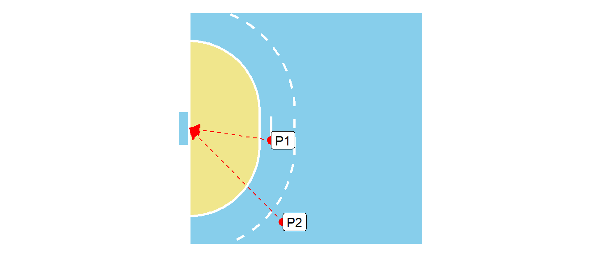
Daher ist davon auszugehen, dass die Wahrscheinlichkeiten für einen Treffer die folgende Anordnung zulassen.
\[ \Pr(\text{Tor}_{P1}) < \Pr(\text{Tor}_{P2}) \]
Nun können diese beiden Wahrscheinlichkeiten zueinander ins Verhältnis gesetzt werden, es wird vom sogenannten Risikoverhältnis RR gesprochen.
\[ \text{RR} = \frac{\Pr(\text{Tor}_{P1})}{\Pr(\text{Tor}_{P2})} \]
Die Bezeichnung mit Risikoverhältnis ist in diesem Zusammenhang etwas irreführend, da sie aus dem medizinischen Bereich stammt, wo beispielsweise die Wahrscheinlichkeiten in zwei unterschiedlichen Gruppen an einer Krankheit zu erkranken beschrieben werden kann. Hier ist die Terminologie als Risiko dementsprechend auch besser nachvollziehbar.
Definition 24.1 (Risikoverhältnis (RR)) Das Risikoverhältnis (RR) ist der Quotient aus zwei Wahrscheinlichkeiten (Risiken):
\[ \text{Risikoverhältnis (RR)} = \frac{\text{Risiko in der exponierten / betroffenen Gruppe}}{\text{Risiko in der nicht-exponierten / Vergleichsgruppe}} \]
Das Risiko beschreibt die Wahrscheinlichkeit, dass ein bestimmtes Ereignis in einer Gruppe eintritt (z.B. Krankheit, Treffer, Unfall). Es können für das RR die folgenden Fälle unterschieden werden:
- RR = 1 \(\rightarrow\) Das Risiko ist in beiden Gruppen gleich
- RR > 1 \(\rightarrow\) Das Risiko ist in der ersten Gruppe höher
- RR < 1 \(\rightarrow\) Das Risiko ist in der ersten Gruppe niedriger
Eine weitere Betrachtung der Trefferwahrscheinlichkeit ist über die sogenannte Chance (engl. odds) möglich. Hier wird der Quotient zwischen der Anzahl der Treffer zu der Anzahl der verworfenen Würfe betrachtet. Also wird zum Beispiel aus Position P1 geworfen und von \(100\) Würfen sind \(30\) erfolgreich und \(70\) nicht erfolgreich, dann ergibt das für die odds.
\[ \text{odds} = \frac{\#\text{Tore}}{\#\text{Fehlwürfe}} = \frac{30}{70} \approx 0.43 \]
Wenn nun oben und unten mit der Anzahl \(N\) der Würfe erweitert wird und beachtet wird das \(\Pr(\text{Fehlwurf}) = 1 - \Pr(\text{Tor})\) erhält man:
\[ \text{odds} = \frac{\#\text{Tore}/N}{\#\text{Fehlwürfe}/N} = \frac{\Pr(\text{Tor})}{\Pr(\text{Fehlwurf})} = \frac{\Pr(\text{Tor})}{1 - \Pr(\text{Tor})} \]
Wenn nun noch verallgemeinert wird und aus Tor ein beliebiges Ereignis wird und mit der Festsetzung \(\Pr(\text{Ereignis}) = p\) folgt:
\[ \text{odds} = \frac{\Pr(\text{Ereignis})}{\Pr(\text{Nicht-Ereignis})} = \frac{p}{1-p} \\ \]
Definition 24.2 Die Chance oder auch Odds ist definiert als das Verhältnis der Wahrscheinlichkeit, dass ein bestimmtes Ereignis eintritt, zu der Wahrscheinlichkeit das das Ereignis nicht eintritt.
\[ \text{odds (für ein Ereignis)} = \frac{p}{1 - p} \tag{24.1}\]
Dabei beschreibt \(p\) die Wahrscheinlichkeit, dass das Ereignis eintritt.
Odds werden historisch vor allem bei Sportwetten verwendet, weil sie den potenziellen Gewinn direkt mit dem Risiko in einer einzigen Zahl verbinden und für Wettende intuitiver sind als reine Wahrscheinlichkeiten. Sie zeigen sofort, wie viel man bei einem bestimmten Einsatz gewinnen kann (z.B. Quote 3.00: Einsatz verdreifacht).
Beispiel 24.1 (Verschiedene Odds im Handball)
| Fall | #Tore | #Fehlwürfe | odds |
|---|---|---|---|
| 1 | \(30\) | \(60\) | \(\frac{1}{2}\) |
| 2 | \(60\) | \(30\) | \(2\) |
| 3 | \(120\) | \(30\) | \(4\) |
| 4 | \(60\) | \(60\) | \(1\) |
In Tabelle 24.1 sind verschiedene Beispiel für odds gezeigt und wie sich die Anzahl der Ereignisse für diese unterschiedlichen odds verhält. Zum Beispiel im 3. Fall ist die Chance ein Tor zu erzielen viermal so hoch wie daneben zu werfen.
Beispiel 24.2 Ein weiteres typisches Beispiel sind die Odds für Regen am nächsten Tag. Liegt zum Beispiel die Wahrscheinlichkeit für Regen bei \(p(\text{Regen}) = 0.7\) dann sind die Odds für Regen:
\[ \text{Odds}(\text{Regen}) = \frac{0.7}{1-0.3} = \frac{0.7}{0.3} = \frac{7/10}{3/10} = \frac{7}{10}\frac{10}{3}=\frac{7}{3}\approx 2.3 \]
Der Graph der Odds gegen die Wahrscheinlichkeit ist in Abbildung 24.3 zu sehen.
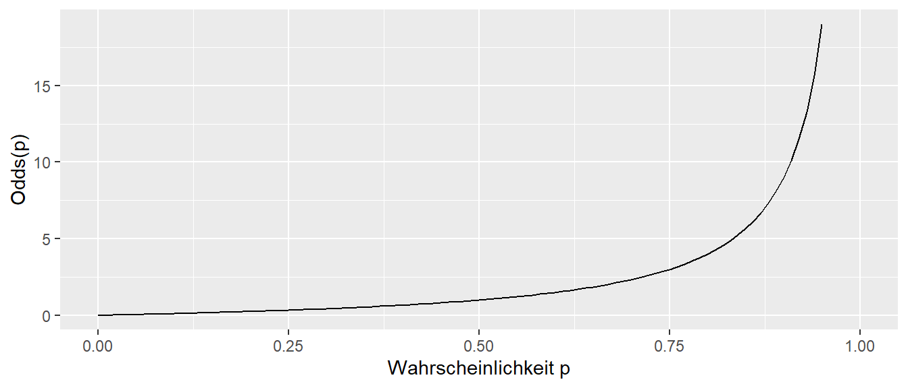
Da die Odds auf Wahrscheinlichkeiten definiert sind, ist der Definitionsbereich \([0,1)\) und die Funktion ist monoton steigend.
Zusammengefasst, geben Odds eine Abschätzung darüber, wie viel wahrscheinlicher es ist ein bestimmtes Ereignis zu beobachten, als das Ereignis nicht zu beobachten. Odds geben aber nicht die die absolute Wahrscheinlichkeit an, also wie wahrscheinlich es ist zu treffen, sondern Odds sagen etwas darüber aus, wie oft es klappt im Vergleich dazu, wie oft es nicht klappt.
Über einfaches Umstellen können kann aus den Odds auch wieder der Wert für \(p\) berechnet werden.
\[ p = \frac{\text{odds}}{1 + \text{odds}} \]
Entsprechend hat der Graph der Wahrscheinlichkeit gegen die Odds die folgende Form (siehe Abbildung 24.4)
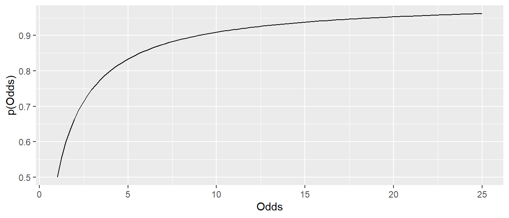
Der Graph ist wieder monoton steigend.
Da die Odds nur auf den Wert \(p \in [0,1)\) definiert sind, wird es im Zusammenhang mit der Logistischen Regression von Vorteil sind, wenn die Funktion auf den gesamten reelen Zahlen definiert ist. Dies kann erreicht werden, indem der Logarithmus der Odds genommen wird, was zu den sogenannten Log-Odds führt.
\[ \text{Log-Odds} = \log(\text{Odds}(p)) \]
Über die Exponentialfunktion als die Umkehrfunktion des Logarithmus \(x = \exp(\log(x))\) wird der folgenden Zusammenhang erhalten, der später noch von Relevanz wird.
\[ p(\text{Odds}) = \frac{\text{Odds}}{1+\text{Odds}} = \frac{e^{(\log(Odds))}}{1+e^{\log(\text{Odds})}} \]
Der Graph Wahrscheinlichkeit p gegen die Log-Odds führt zu der folgenden Darstellung (siehe Abbildung 24.5).
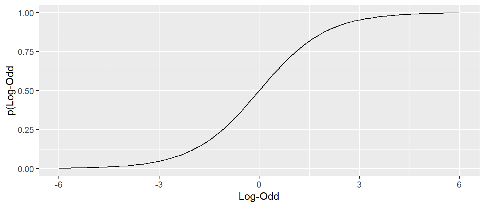
Hier ist auch wieder zu erkennen, dass die Funktion monoton steigt zwischen \(0\) und \(1\) und einen S-förmigen Verlauf hat.
Nach dem Risikoverhältnis RR und den Odds gibt es noch eine wichtige Größe für die Behandlung der logistischen Regression, dass sind die Odds Ratios.
Definition 24.3 (Odds Ratio (OR)) Das Odds Ratio (Chancenverhältnis, Odds-Verhältnis, OR) ist ein Maß, das beschreibt, wie stark sich die Chancen (Odds) für ein bestimmtes Ereignis zwischen zwei Gruppen unterscheiden. D.h. OR ist der Quotient zweier Odds.
\[ \text{Odds Ratio} = \text{OR} = \frac{\text{Odds in Gruppe A}}{\text{Odds in Gruppe B}} = \frac{\frac{\text{Treffer}_A}{\text{Fehlwürfe}_A}}{\frac{\text{Treffer}_B}{\text{Fehlwürfe}_B}} \]
Bezogen auf das Beispiel Abbildung 24.2 kann für die beiden Wurfpositionen P1 und P2 die Odds berechnet werden. Unter der Annahme der folgenden Werte (siehe Tabelle 24.2)
| Wurfposition | Treffer | Fehlwürfe | Odds (Treffer : Fehl) | Odds als Zahl |
|---|---|---|---|---|
| P1 | \(80\) | \(20\) | \(80 : 20\) | \(4\) |
| P2 | \(20\) | \(80\) | \(20 : 80\) | \(\frac{1}{4}\) |
Aus den gegeben Odds berechnet sich das folgende Odds Ratio:
\[ \text{OR} = \frac{4}{\frac{1}{4}} = 16 \]
D.h. die Chance zu treffen ist an Position P1 \(16\)-mal so hoch wie in P2. Die Odds sind bei einem Wurf von P1 16-mal höher als bei einem Wurf von P2. Odds Ratio sagt nicht wieder nicht, wie wahrscheinlich ein Ereignis (z.B. Treffer) ist, sondern OR beschreibt, wie viele Male höher (oder niedriger) die Chancen in einer Situation (Gruppe) im Vergleich zu einer anderen sind. Bei der Interpretation gelten ähnlich Kategorien wie bei den Odds.
- OR = 1 \(\rightarrow\) Chancen sind gleich (kein Unterschied)
- OR > 1 \(\rightarrow\) höhere Chance in Gruppe A
- OR < 1 \(\rightarrow\) niedrigere Chance in Gruppe A (schützender Effekt)
Die Odds Ratio treten auch im Zusammenhang mit Kreuztabellen auf. Zum Beispiel, wenn Tabelle 24.2 in der folgenden Form dargestellt wird (siehe Tabelle 24.3:
| P1 | P2 | |
|---|---|---|
| Treffer | \(80_{a}\) | \(20_{b}\) |
| Fehlwurf | \(20_{c}\) | \(80_{d}\) |
Das OR berechnet sich hier nach der Formel:
\[ \text{OR} = \frac{a\cdot d}{b\cdot c} = \frac{80\cdot 80}{20\cdot 20} = 16 \]
Wenn in Tabelle 24.3 Treffer mit Krankheit und Wurfposition mit exposure ausgetauscht wird, dann wird der Zusammenhang mit der Schätzung von Erkrankungen auch wieder direkter einsichtig. Im Rahmen von Untersuchungen im medizinischen Bereich ist daher die OR eine zentrale Kenngröße um z.B. abzuschätzen ob ein Medikament wirksam ist oder nicht. Ein wichtiger Punkt zum Odds Ratio. Die Kenntnis des Odds Ratios erlaubt keine Aussage darüber zu treffen, wie Wahrscheinlich das auftreten einer Krankheit ist.
Beispiel 24.3 (Odds Ratios und Baselinewahrscheinlichkeit) Es sei angenommen, es werden zwei verschiedene Torwärter eingesetzt. T1 ein weniger guter Torwart der nur in der Kreisliga spielt und T2 ein sehr guter Torwart der auf Nationalniveau spielt. Entsprechend verändern sich die Trefferwahrscheinlichkeiten in folgender Art und Weise:
| P1 | T1 | T2 |
|---|---|---|
| \(p\) | \(0.8\) | \(0.5\) |
| Odds | \(4\) | \(1\) s |
| P2 | T1 | T2 |
|---|---|---|
| \(p\) | \(0.4\) | \(\frac{1}{7}=\approx 0.14\) |
| Odds | \(\frac{2}{3}\) | \(\frac{1}{6}\) |
Die Verteilung würde zu den folgenden Odds Ratios führen.
\[ \text{OR}_{T1} = \frac{4}{\frac{2}{3}} = 6, \quad \text{OR}_{T2} = \frac{1}{\frac{1}{6}} = 6 \]
D.h. in beiden Fällen ist das Odds Ratio gleich, allerdings sind die Grundwahrscheinlichkeiten für einen Treffer sehr unterschiedlich in Abhängigkeit welcher Torwart zum Einsatz kommt. D.h. ein Odds Ratio von \(6\) bedeutet immer die Chancen werden versechsfacht, aber ob das mit einer Erhöhung der Trefferquote von \(p(P2)_{T1} = 0.4\) auf \(p(P1)_{T1} = 0.8\) oder einer Erhöhung von \(p(P2)_{T2} = 0.14\) auf \(p(P1)_{T2} = 0.5\) einhergeht, hängt von der Baseline Trefferquote ab.
Beispiel 24.4 Seien zwei Medikamente gegeben. Bei Gabe von Medikament A treten Nebenwirkungen mit einer Wahrscheinlichkeit von \(p_A = 0.001\) auf. Bei Gabe von Medikament B treten Wahrscheinlichkeiten mit \(p_B = 0.0005\) auf. Daraus ergeben sich die folgenden Odds:
\[ \begin{aligned} \text{Odds}(A) &= \frac{0.001}{1-0.001}\approx 0.001 \\ \text{Odds}(B) &= \frac{0.0005}{1-0.0005}\approx 0.0005 \\ \end{aligned} \]
Daraus ergibt sich ein Odds-Ration von:
\[ OR = \frac{0.001}{0.0005} \approx 2 \]
D.h. die Wahrscheinlichkeit für Nebenwirkungen ist bei Medikamentengabe A etwa doppelt so hoch wie bei Medikament B. In diesem Fall, ist das Ergebnis auch direkt aus den Wahrscheinlichkeiten einsichtig. Hier tritt der Fall auf, dass für kleine Wahrscheinlichkeiten \(p\) die Odds und die Wahrscheinlichkeiten sehr ähnliche Werte haben.
Diese drei Begrifflichkeiten Risikoverhältnis RR, Chance oder Odds und Odds ratio OR auseinander zu halten ist wichtig bei der Interpretation der Ergebnisse der logistischen Regression. Vor allem ein klares Verständnis der ORs ist wichtigt, da diese mittels der Logistischen Regression direkt geschätzt werden. Im nächsten Schritt wird die Logistische Funktion betrachtet
24.2 Die Logistische und die Logit Funktion
Die logistische Funktion und Namensgeberin der Logistischen Regression ist schon im Zusammenhang mit den Log-Odds informell eingeführt worden. Die logistische Funktion ist entsprechend über den Bereich \([-\infty,\infty]\) definiert und hat den Wertebereich \([0,1]\). D.h. durch die logistische Funktion kann das eingangs beschriebene Problem bei der normalen Regression behoben werden, dass Werte außerhalb von \([0,1]\) nicht auftreten. Die Funktion ist wie folgt definiert:
\[ f(z) = \frac{1}{1 + e^{-z}} \tag{24.2}\]
Durch Umformung bzw. Erweiterung mit \(e^z\) wird eine alternative Formulierung erhalten, die auch oft in der Literatur verwendet wird und die bei den Log-Odds verwendet wurde.
\[ f(z) = \frac{1}{1+e^{-z}} = \frac{e^z}{e^z + e^{-z}e^z} = \frac{e^z}{1+e^z} \]
Der Graph der logistischen Funktion sieht folgendermaßen aus (siehe Abbildung 24.6).
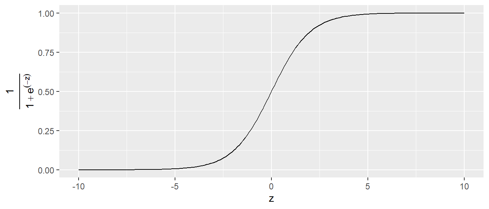
D.h. die logistische Funktion geht nach links asymptotisch gegen Null und recht asymptotisch gegen \(1\). Dazwischen folgt der Graph einer S-förmigen Kurve. Die maximale Steigung wird an dem Punkt \(f(0)\) erreicht. Der Graph der logistischen Funktion kann angepasst werden, indem eine Parametrisierung eingeführt wird. Dies führt zu.
\[ f(z,a) = \frac{1}{1+e^{-az}} \]
Über den Parameter \(a\) kann nun die Steilheit der S-Kurve manipuliert werden (siehe Abbildung 24.7).
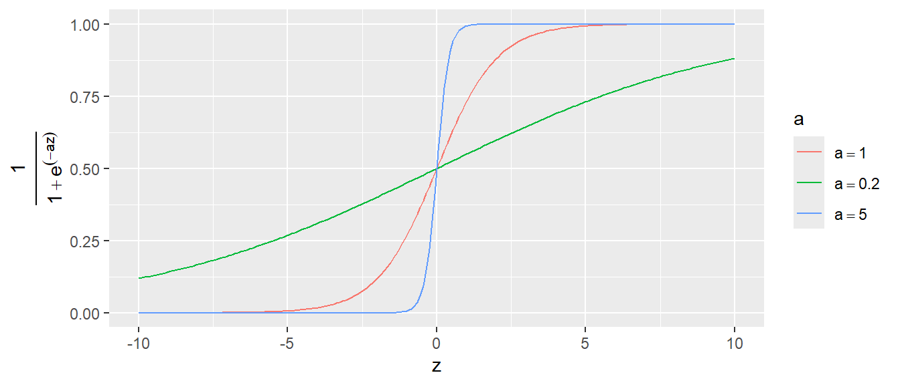
Entspechend kann der Übergang von \(0\) zu \(1\) entweder sehr abrupt stattfinden oder ober einen längeren Bereich gestreckt werden. Der Graph kann natürlich auch auf der \(x\)-Achse nach links oder rechts verschoben, indem die Transformation \(z = x \pm b\) eingeführt wird (siehe Abbildung 24.8).
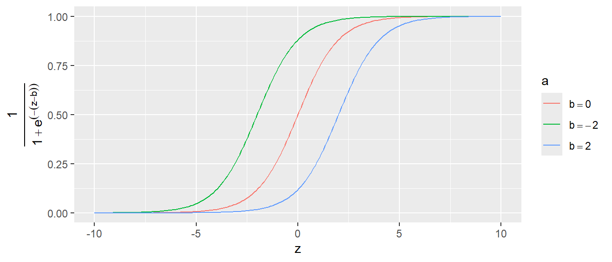
Eine wichtige Eigenschaft der logistischen Funktion die auch später bei der Interpretation der logistischen Regression immer wieder auftauchen wird, ist die Nichtlinearität des Graphen. Dies führt dazu, dass die Veränderung \(\Delta Y\) auf der \(Y\)-Achse für einen gegebenen Unterschied \(\Delta X\) unterschiedlich ausfällt, je nachdem in welchem Bereich der Funktion sich \(X\) befindet. Zum Beispiel gilt führt eine Veränderung um \(\Delta X = 1\) von \(-2\) zu \(-1\) und von \(0\) zu \(1\) zu den folgenden Werten:
\[ \begin{aligned} x: -2 \rightarrow -1: \Delta y &= 0.1 \\ x: 0 \rightarrow 1: \Delta y &= 0.2 \end{aligned} \]
Die Umkehrfunktion der logistischen Funktion ist die sogenannte Logit Funktion .
\[ \text{logit}(x) = \text{log}\left(\frac{x}{1-x}\right) \tag{24.3}\]
Der Graph der Logit Funktion ist in Abbildung 24.9 abgetragen.
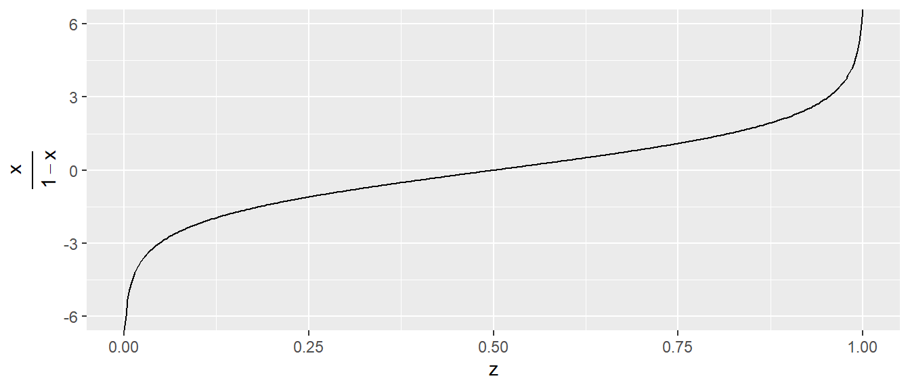
Wie zu erwarten ist der Definitionsbereich der Logit-Funktion \([0,1]\). Der Graph der Logit-Funktion hat Polstellen bei \(0\) und \(1\), so dass der Graph dort asymptotisch gegen \(-\infty\) bzw. \(\infty\) geht.
Tipp
Um so sehen, dass der Logit die Umkehrfunktion der logistischen Funktion ist. Zunächst eine kurze Äquivalenzgleichung mit der Festsetzung \(x = f(z) = \frac{1}{1+e^{-z}}\).
\[ 1 - x = 1 - \frac{1}{1 + e^{-z}} = \frac{1 + e^{-z}}{1 + e^{-z}} - \frac{1}{1 + e^{-z}} = \frac{e^{-z}}{1 + e^{-z}} \]
Daraus folgt:
\[ \frac{x}{1 - x} = \frac{\frac{1}{1 + e^{-z}}}{\frac{e^{-z}}{1 + e^{-z}}} = \frac{1}{1 + e^{-z}} \cdot \frac{1 + e^{-z}}{e^{-z}} = \frac{1}{e^{-z}} = e^{z} \]
Angewandt auf in die Logit Funktion folgt somit:
\[ \text{logit}(\text{logistic}(z))=\text{logit}(x) = \ln\left( \frac{x}{1 - x} \right) = \ln(e^{z}) = z \]
Eine wichtige Verbindung zwischen der Logistischen Funktion, der Logit Funktion und Odds wird ersichtlich, wenn die folgende Änderung in der Nomenklatur angewandt wird. Da die logistische Funktion den Wertebereich \([0,1]\) hat, können die berechneten Werte im jeweiligen Zusammenhang als Wahrscheinlichkeiten \(p\) in Abhängigkeit von \(x\) interpretiert werden. Also:
\[ p(x) = \frac{1}{1+e^{-x}} \]
Entsprechend kann an die Logit-Funktion anstatt ein Wert \(x\) ebenfalls eine Wahrscheinlichkeit \(p\) übergeben werden. Nochmal, dies sind nur Änderung der Interpretation, ein Wert wird nicht zur Wahrscheinlichkeit, weil aus einem \(x\) ein \(p\) gemacht wird.
\[ \text{logit}(p(x)) = \ln\left(\frac{p(x)}{1-p(x)}\right) \]
Unter dieser Betrachtungsweise, ist der berechnete Wert der Logit-Funktion der natürliche Logarithmus eines Odds, da \(\frac{p}{1-p}\) ja genau die Definition von Odds ist. Insgesamt folgt:
\[ \text{logit}(\text{logistic}(x))=\text{logit}(p(x)) = \ln\left( \frac{p(x)}{1 - p(x)} \right) = \ln(e^{x}) = x \]
24.3 Die logistische Regression
Nun kann die logistische Regression eingeführt werden. Es liegt nun das folgende vor. Es wurden insgesamt \(20\) Würfen von der zentralen Linie auf das Tor gemacht. Zehn der Würfe wurden direkt von der Torraumlinie (6m) und zehn Würfe aus dem Rückraum (8m). Es ergibt sich die folgende Verteilung der Würfe (siehe Abbildung 24.10).
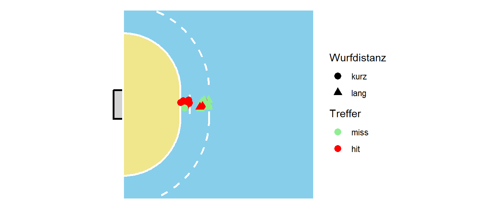
Die Würfe werden nun in zwei Kategorien eingeordnet. Würfe mit einer Distanz von \(\leq8\)m werden als kurz bezeichnet und Würfe mit einer Distanz von \(>8\)m werden als lang bezeichnet. Es ergibt sich die folgende tabellarische Anordnung.
| kurz | lang | |
|---|---|---|
| miss | 1 | 7 |
| hit | 9 | 3 |
Häufigkeitstabelle der Würfe
Nun soll die Trefferwahrscheinlichkeit für die beiden Kategorien in einem logistischen Regressionsmodell geschätzt werden. D.h. es soll das folgende Modell geschätzt werden:
\[ p_{Tor,i} = \beta_0 + \beta_1 \cdot d_i \quad i=1,2,\ldots, N \]
In diesem Fall ist \(\beta_0\) als eine Basistrefferwahrscheinlichkeit zu interpretieren und \(\beta_1\) beschreibt dann, wie sich die Wahrscheinlichkeit ändert wenn von kurz auf lang gegangen wird. Da die Distanz nun eine kategorische Variable ist, wird wieder mit eine Dummy-Kodierung gearbeitet und kurz ist die Referenzkategorie mit \(d=0\) und lang ist die Alternativkategorie mit \(d=1\). Dadurch wird \(\beta_0\) zur Trefferwahrscheinlichkeit für kurz.
Wie schon besprochen, muss aber sichergestellt werden, dass \(p_{Tor,i}\) tatsächlich auch nur Werte zwischen \(0\) und \(1\) annehmen kann, dass es als eine Wahrscheinlichkeit interpretiert werden soll. Hier kommt nun die logistische Funktion ins Spiel. Dazu wird der lineare Teil auf der rechten Seite der Gleichung an die logistische Funktion übergeben.
\[ \begin{aligned} z &= \beta_0 + \beta_1d_i \\ f(z) &= f(\beta_0 + \beta_1d_i) = \frac{1}{1 + e^{-(\beta_0 + \beta_1d_i})} \end{aligned} \]
Insgesamt folgt daraus:
\[ p_{Tor,i} = \frac{1}{1 + e^{-(\beta_0 + \beta_1d)}} \tag{24.4}\]
Dieses Zwischenschieben der logistischen Funktion stellt sicher, dass tatsächlich nur Werte zwischen \(0\) und \(1\) für \(p_{Tor,i}\) berechnet werden. Wird dieses Modell nun in R gefittet (wie wird später gezeigt) dann ergibt sich das folgende Ergebnis (Tabelle 24.6}.
| Koeffizient | Schätzer |
|---|---|
| \(\beta_0\) | \(2.2\) |
| \(\beta_1\) | \(-3.04\) |
Was bedeuten diese Parameter nun? Dazu müssen die Koeffizienten in die Formel für die logistische Regression eingesetzt werden. Sei zum Beispiel der Wert für eine Werferin aus der kurzen Distanz gesucht. Da kurz die Referenzkondition ist, gilt \(d = 0\). Daher wird aus Gleichung 24.4.
\[ \begin{split} p_{Tor,i} &= \frac{1}{1 + e^{-(2.2 + ` beta_1`\cdot 0)}} \\ &= \frac{1}{1 + e^{-2.2 }} \\ &= 0.9 \end{split} \]
D.h. im Mittel liegt die Wahrscheinlichkeit aus der kurzen Distanz zu treffen bei \(p_{\text{kurz}} = 0.9\). Wie seht es nun für einen Wurf aus der weiten Distanz aus. Hier gilt nun \(d = 1\) und es folgt:
\[ \begin{split} p_{Tor,i} &= \frac{1}{1 + e^{-(2.2 + -3.04\cdot 1)}} \\ &= \frac{1}{1 + e^{--0.84 }} \\ &= 0.3 \end{split} \]
Wie erwartet ist die Wahrscheinlichkeit aus der weiten Distanz geringer mit \(p_{\text{lang}} = 0.3\).
Nochmal zusammengefasst: Es wurde der Ansatz der linearen Regression verwendet mit einer Punkt-Steigungsform. Allerdings wurde nun die Punkt-Steigungsform in eine zusätzlich Funktion, die logistische Regression, gesteckt, damit die berechneten Werte in dem gewünschten Bereich zwischen \(0\) und \(1\) liegen. Daran schließt sich nun die Frage: Können die Koeffizienten \(\beta_0\) und \(\beta_1\) auch direkt interpretiert werden?
Um die Bedeutung der Koeffizienten zu verstehen, wird nun wieder auf Logit-Funktion zurückgegriffen. Wie bereits erläutert, ist die Logit-Funktion die Umkehrfunktion der Logistischen-Funktion. D.h. es gilt der folgende Zusammenhang:
\[ \begin{split} \text{logit}(\text{logistic}(\beta_0+\beta_1d_i)) &=\text{logit}(p(\beta_0+\beta_1d_i)) \\ &= \ln\left( \frac{p(\beta_0+\beta_1d_i)}{1 - p(\beta_0+\beta_1d_i)} \right) \\ &= \ln(e^{\beta_0+\beta_1d_i}) \\ &= \beta_0+\beta_1d_i \end{split} \]
Insbesondere der dritte und der letzte Teil der Gleichung führt zu dem Zusammenhang:
\[ \ln\left( \frac{p(\beta_0+\beta_1d_i)}{1 - p(\beta_0+\beta_1d_i)} \right) = \beta_0+\beta_1d_i \]
Sei nun ein Wurf aus der kurzen Distanz betrachtet dann gilt \(d_i = 0\) was zu der folgenden Vereinfachung führt:
\[ \ln\left( \frac{p(\beta_0)}{1 - p(\beta_0)} \right) = \beta_0 \]
D.h. der \(y\)-Achsenabschnitt \(\beta_0\) beschreibt den Logarithmus der Odds (kurz: log odds) für einen erfolgreichen Wurf aus der kurzen Distanz. Wenn diese Gleichung nun exponentiert wird folgt (\(e^(x)\) ist die Umkehrfunktion von \(\log(x)\):
\[ e^{\left(\ln\left( \frac{p(\beta_0)}{1 - p(\beta_0)} \right) \right)}=\frac{p(\beta_0)}{1 - p(\beta_0)} = e^{\beta_0} \]
Ausgeschrieben, der Koeffizienten \(\beta_0\) exponentiert, \(e\) hoch \(\beta_0\), beschreibt die Odds aus der kurzen Distanz zu treffen. D.h. im Vergleich zur linearen Regression ist die Interpretation durch die Anwendung der Logistischen- bzw. Logit-Funktion nun etwas komplizierter. Wie sieht es für \(\beta_1\) aus?
Es gilt zunächst, dass nun eine Wurf aus der weiten Distanz betrachtet wird und \(d_i = 1\) gilt. Um den Wert \(\beta_1\) in \(\beta_0 + \beta_1 d_i = \beta_0 + \beta_1\) zu isolieren muss zunächst \(\beta_0\) subtrahiert werden indem die Gleichungen von eben verwendet werden. Formal:
\[ \beta_1 = \beta_0 + \beta_1d_i - \beta_0 = \ln\left( \frac{p(\beta_0+\beta_1d_i)}{1 - p(\beta_0+\beta_1d_i)} \right) - \ln\left( \frac{p(\beta_0)}{1 - p(\beta_0)} \right) \]
Mit der Eigenschaft des Logarithmus \(\log(\frac{a}{b}) = \log(a) - \log(b)\) unter Berücksichtigung von \(d_i = 1\) folgt:
\[ \beta_1 = \ln\left( \frac{\frac{p(\beta_0+\beta_1)}{1 - p(\beta_0+\beta_1)}}{\frac{p(\beta_0)}{1 - p(\beta_0)}} \right) = \ln\left(\frac{\text{Odds}_{\beta_0+\beta_1}}{\text{Odds}_{\beta_0}}\right) \]
D.h. der Koeffizient \(\beta_1\) beschreibt das log Odds-Verhältnis (log odds ratio oder log OR) zwischen einen Wurf aus der kurzen Distanz und einem Wurf aus der weiten Distanz. Exponentieren mit \(e\) ergibt entsprechend:
\[ e^{\beta_1} = \frac{\text{Odds}_{\beta_0+\beta_1}}{\text{Odds}_{\beta_0}} \]
Wiederum ist die Interpretation des Steigungskoeffizienten \(\beta_1\) bei der Logistischen Regression, wie auch für \(\beta_0\) abstrakter als dies bei der linearen Regression der Fall ist. Wie später gezeigt wird, führt dies dazu, dass wenn eine kontinuierliche Variable \(x\), also im Beispiel die tatsächlichen Distanzen \(d_i\) verwendet werden, \(\beta_1\) die Änderung im odds ratio bei einer Veränderung von \(\Delta d = 1\) um eine Einheit beschreibt.
Sei dazu kurz die Berechnung der OR anhand von Tabelle 24.5 durchgeführt.
\[ (1\cdot 3)/(7\cdot 9) = 0.048 \]
Berechnung von \(e^{\beta_1}\) liefert:
\[ e^{-3.04} = 0.048 \]
Im Folgenden wird noch eine alternative Betrachtung der Logistischen Regression angewandt um das Verständnis noch einmal zu erweitern. Dazu wird ein Spezialfall des vorhergehenden Beispiels betrachtet indem nur Würfe aus der kurzen Distanz analysiert werden (siehe Abbildung 24.11)
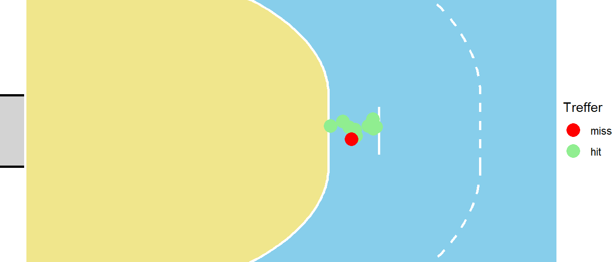
Mittels der Logistischen Regression wird für die Würfe eine mittlere Trefferwahrscheinlichkeit berechnet. Ähnlich wie das bei der einfachen Regression auch der Fall ist. Dort wird ein mittlerer Wert \(\hat{y}_i\) berechnet, nämlich genau derjenige der auf der Linie für ein gegebenes \(X\) liegt. Übertragen auf das Beispiel, liefert das Logistische Regressionsmodell eine mittlere Wahrscheinlichkeit \(\hat{p}(d)\) aus dieser Distanz zu treffen.
Im Beispiel Fall wurden \(10\) Würfe beobachtet. Von diesen \(10\) Würfen ging einer daneben und neun waren Treffer. Oben wurde auch gezeigt, dass die berechnet Wahrscheinlichkeit auch tatsächlich diesem Verhältnis entspricht mit \(p_{Tor} = 0.9\). Eine andere Betrachtungsweise wäre, die einzelnen Würfe als das Ergebnis eines Münzwurfes zu sehen. Die Fragestellung wäre dementsprechend: “Wie viele der zehn Würfe waren erfolgreich?”. Dies ist aber wieder ein Wahrscheinlichkeitsmodell das schon vorher behandelt wurde, nämlich im Rahmen der Binomialverteilung. Unter dieser Sichtweise folgt \(Y_i\) einer Binomialverteilung mit \(n = 10\) und einem zu bestimmenden \(p\).
Die gleiche Situation ergibt sich wenn die langen Würfe betrachtet werden (siehe Abbildung 24.12).
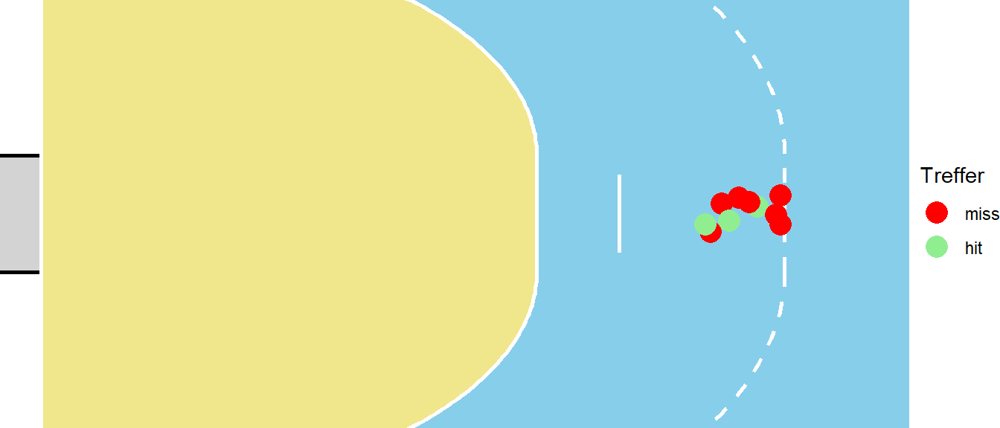
In diesem Fall ist das Ergebnis so, dass von zehn Würfen nur drei getroffen wurden was sich auch wieder in dem Ergebnis der Logistischen Regression widerspiegelt. Hier wurde also eine neue Binomialverteilung gefittet mit \(n = 10\) und nun einem anderen \(p\). Formal aufgeschrieben mit Erwartungswert \(E[X]\) der die mittlere Trefferwahrscheinlichkeit beschreibt, ergibt sich:
\[ E[Y|X] = p \]
Der senkrechte Strich \(|\) bedeutet wiederum “gegeben”, also ausgesprochen der “Erwartungswert von \(Y\) für ein gegeben \(X\) ist \(p\). Die Variable \(p\) folgt wieder einer Binomialverteilung. Dies ist vollkommmen parallel zu der Herleitung der normalen linearen Regression, wo der Wert auf der Geraden einer Normalverteilung folgte:
\[ E[Y|X] = \mathcal{N}(\beta_0 + \beta_1 X, \sigma^2) \]
Im vorliegenden Fall ist die abhängige Variable allerdings nicht mehr Normalverteilt sondern Biomialverteilt.
\[ E[Y|X] = \text{Binom}(n,p) \]
Die logistische Regression ist dabei wieder linear in den Parametern in der Form von \(\beta_0 + \beta_1 X_{1i}\), allerdings, im Gegensatz zu normalen linearen Regression, überträgt sich diese Linearität nicht mehr die abhängige Variable \(Y\). Wie bereits gezeigt, ist der Graph der Wahrscheinlichkeiten \(p\) S-förmig.
Um von der abhängigen Variable \(p\) auf die linearen Parameter \(\beta_i\) abzubilden wird die beieits eingeführt Logit-Funktion verwendet.
\[ \text{logit}(p) = \beta_0 + \beta_1 X \]
Die Logit-Funktion wird in diesem Zusammenhang auch als Link-Funktion bezeichnet. D.h. die Link-Funktion verknüpft den mittleren Wert der abhängigen Variablen mit den linearen Parametern. In der Literatur wird oft eine Terminologie verwendet, bei der die Link-Funktion den Buchstaben \(g\) bekommt. Die Link-Funktion bildet dann \(E[Y|X] = \mu\), als den mittleren Wert (im Beispiel die Trefferwahrscheinlichkeit \(p(d)\)) auf den linearen Prädiktor (im Beispiel \(\beta_0 + \beta_i \cdot D\)) ab. Dabei wird noch eine Zwischenvariable \(\eta\) eingeführt, die das Ergebnis des linearen Prädiktors ist (im Beispiel entsprechend \(\eta = \beta_0 + \beta_1 \cdot D\))
Definition 24.4 (Link-Funktion) Die Link-Funktion \(g\), definiert den Zusammenhang zwischen der abhängigen Variable \(Y\), deren Erwartungswert \(\mu = E[Y]\) und dem linearen Prädiktor \(\eta = \beta_0 + \beta_1 x_1 + \beta_2 x_2 + \dots + \beta_k x_k\). Formal:
\[ g(\mu) = \eta = \beta_0 + \beta_1 x_1 + \beta_2 x_2 + \dots + \beta_k x_k \]
Nochmal, bei der Logistischen Regression die Logit-Funktion die Link-Funktion.
TODO: D als kontinuierliche Variable
24.4 Die Parameter einer logistischen Regression bestimmen
24.5 Multivariate Logistische Regression
24.6 Den Modellfit bewerten
24.7 Logistische Regression in R
24.8 Vorhersagen
24.9 Die logistische Regression als Klassifikationsalgorithmus
| Tatsächlich | Vorhergesagt: Positive | Vorhergesagt: Negative |
|---|---|---|
| Positive | True Positive (TP) | False Negative (FN) |
| Negative | False Positive (FP) | True Negative (TN) |
| Metrik | Berechnung |
|---|---|
| Accuracy | \((TP + TN) / \text{Total Samples}\) |
| Precision, (Positive Predictive Value) | \(TP / (TP + FP)\) |
| Recall (Sensitivity) | \(TP / (TP + FN)\) |
| F1 Score | \(\frac{2}{\frac{1}{\text{Precision}} + \frac{1}{\text{Sensitivity}}}\) |
Welche Eigenschaften sind wichtig für einen Klassifikationsalgorithmus?
- Discrimination
- Calibration
24.9.1 Diskriminierung
Definition 24.5 (Diskriminierung) Discrimination refers to a model’s ability to distinguish between positive and negative cases. Discrimination assesses how well a model separates different outcome classes.
Intuition:
Discrimination tells us how well the model differentiates between classes, regardless of the predicted probability values being perfectly aligned with real-world outcomes.
24.9.2 Kalibrierung
Definition 24.6 (Kalibrierung) Calibration refers to the agreement between predicted probabilities and the observed proportions of outcomes. A well-calibrated model outputs probabilities that reflect the true likelihood of an event.
Intuition: Calibration ensures that the model’s predictions are not just accurate in classification but also reliable as probability estimates.
24.9.3 Receiver Operator Characteristic (ROC)
\[ \text{True Positive Rate (TPR, Sensitivity)} = \frac{\text{True Positives}}{\text{True Positives + False Negatives}} \]
\[ \text{False Positive Rate (FPR)} = \frac{\text{False Positives}}{\text{False Positives + True Negatives}} \]
\[ \text{Specificity} = \frac{\text{True Negatives}}{\text{True Negatives + False Positives}} \]
\[ \text{FPR} = 1 - \text{Specificity} \]
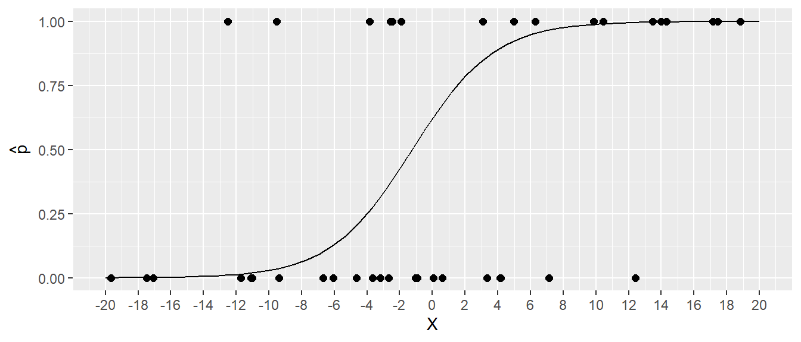
ROC curve

Area under the curve (AUC)

24.9.4 Calibration curve
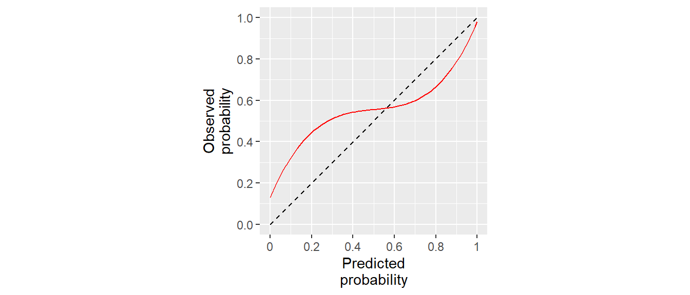
24.9.5 Calculating a prediction curve
24.9.6 Kalibrierungskurven in R
CalibrationCurves

24.9.7 Take-aways Diskriminierung vs. Kalibrierung
| Aspect | Discrimination | Calibration |
|---|---|---|
| Focus | Ability to distinguish classes | Accuracy of predicted probabilities |
| Measurement | AUC, ROC curves | Calibration curves |
| Key Question | “How well does the model rank cases?” | “Are the probabilities realistic?” |